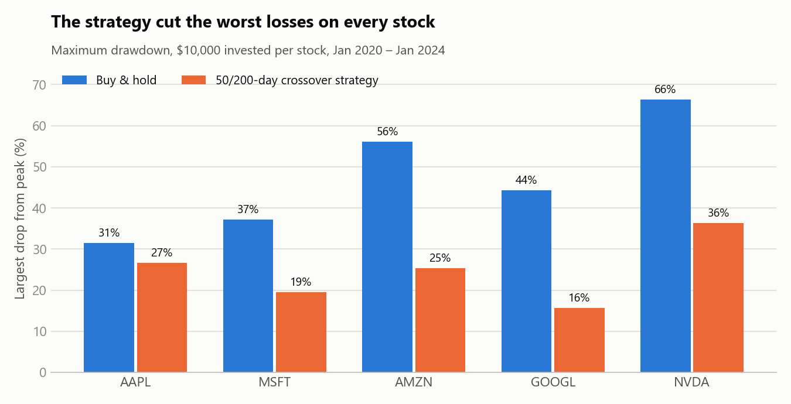
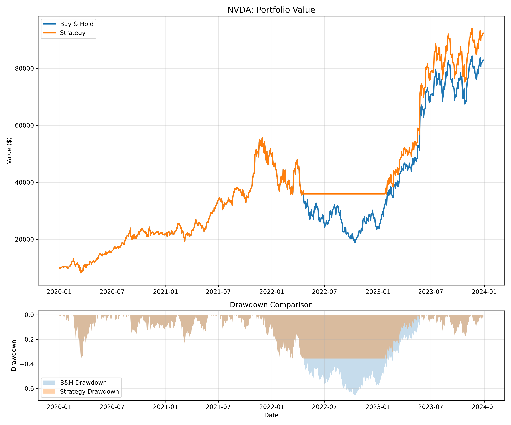

Project · Python Backtesting
Can a Simple Trading Rule Beat Buy-and-Hold?
I built a Python backtest to see whether a rule-based moving average strategy could manage risk better than simply buying and holding five major tech stocks from 2020 to 2024.
Python · pandas · matplotlib · yfinance · GBA 6070 Programming Foundation for Business Analytics, Spring 2026
Approach
Using daily adjusted prices from Yahoo Finance for AAPL, MSFT, AMZN, GOOGL and NVDA, I simulated investing $10,000 in each stock from January 2020 to January 2024 two ways:
- Buy-and-hold: buy on day one and never sell.
- Moving average crossover: hold the stock when its 50-day average price is above its 200-day average (a "golden cross"), and move to cash when it falls below (a "death cross").
The 200-day average needs 200 trading days of history, so I downloaded 2019 prices as well. That way the strategy follows its signal from the first trading day of 2020, instead of sitting in cash while its averages warm up. Signals were shifted by one day to avoid look-ahead bias. I compared total return, annualized return and maximum drawdown (the largest drop from a peak).
Key results

| Stock | Buy-and-hold total return | Strategy total return |
|---|---|---|
| AAPL | +163% | +124% |
| MSFT | +143% | +160% |
| AMZN | +60% | +69% |
| GOOGL | +104% | +125% |
| NVDA | +729% | +824% |
2. It also earned more on 4 of 5 stocks. The strategy beat buy-and-hold's total return on MSFT, AMZN, GOOGL and NVDA. AAPL was the exception: the strategy sold in June 2022, bought back briefly in the fall, and did not re-enter for good until March 2023, missing part of AAPL's rebound.

Summary
From 2020 to 2023, the moving average crossover improved both return and risk on four of the five stocks, mainly by stepping aside during the long 2022 tech decline. Its weaknesses are speed and false signals: it cannot protect against a sudden crash like March 2020, and on AAPL a brief false re-entry cost money while its slow signal missed the start of the recovery.
These results come from a single four-year period that included one long, gradual bear market, which is the kind of market where trend-following rules do best. The five stocks are large tech companies that performed well over this period. The backtest also assumes no trading costs or taxes (the strategy traded only 2 to 5 times per stock) and no interest earned on cash, so real-world results could differ.
Correction: an earlier version of this backtest started the 200-day average on January 1, 2020, which kept the strategy in cash until October 2020. That made it look safer (it skipped the March 2020 crash) but less profitable than it really was. The results above include 2019 price history so both portfolios are compared fairly from the same start date.
Project files
- Full project report (PDF, revised October 2026)
- Backtesting code (Python)